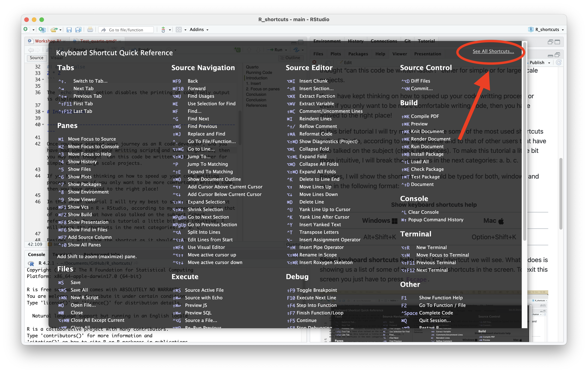
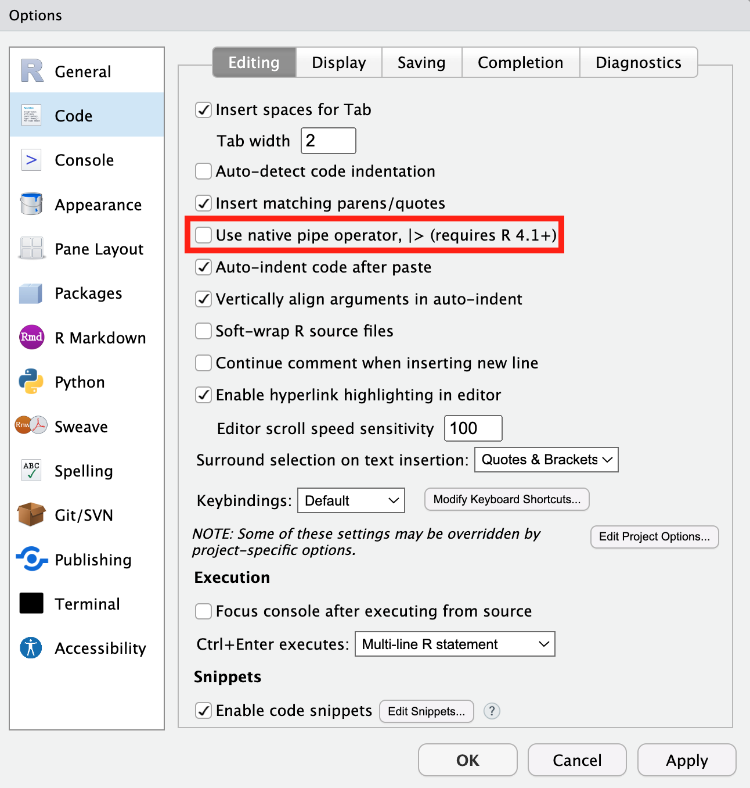

Introduction
Once you have started your journey as an R code developer, and you have had some experience writting scripts and code in general, then you may have thought “can this code be written faster?” either for simple or for large scale projects.
If you have kept thinking on how to speed up your code writting process or even if you only want to be more comfortable writing code, then you have arrived to the right place!
In this brief tutorial I will try my best to share some of the most used shortcuts in R + RStudio, according to my experience and to that of other users that have also talked on the subject (check references). To make this tutorial a little bit more intuitive, I will break the shortcuts in the next categories: a. b. c.
Besides, I will show the shortcut as it should be typed for both, windows and mac in the following format:
| Windows | Mac |
|---|---|
| Alt+Shift+K | Option+Shift+K |
Show keyboard shortcuts help is the first shortcut we will see. What it does is showing us a list of some of the most useful shortcuts in the screen. To exit this screen you just have to press Escape.

In case you need to check the full list of shortcuts, in the upper right corner of the help screen you will find a link called See All Shortcuts which will take you to a page containing all the RStudio shortcuts for specified for Mac, Windows and Linux.
Talk about the github repo! Additional to this
CTRL = ⌘ Command Alt = ⌥ Option
1. Insert
Want a new R Script? easy-peasy!
| Windows | Mac |
|---|---|
| Ctr+Shift+N | Cmd+Shift+N |
You want to assign an object? Instead of pressing < and then -, you can do it directly by pressing:
| Windows | Mac |
|---|---|
| Alt+- | Option+- |
While concatenating functions or operations, forget about writing the pipe by hand. You can insert it directly using this shortcut.
| Windows | Mac |
|---|---|
| Ctrl+Shift+M | Cmd+Shift+M |
The pipe that is going to be inserted is the one defined in Global Options.
You can preset the type of pipe you want to insert by accessing Global Options/Code/Editing and defining which pipe you would like to use.

| Windows | Mac |
|---|---|
| Alt+Ctrl+I | Option+Cmd+I |
| Windows | Mac |
|---|---|
| Ctrl+Shift+C | Cmd+Shift+C |
| Windows | Mac |
|---|---|
| Ctrl+Shift+R | Cmd+Shift+R |
The section breaks have the same structure as the Quarto and RMarkdown headers.
#stands for 1st level header,##stands for 2nd level headers,###stands for 3rd level headers, and so on.
| Windows | Mac |
|---|---|
| Ctrl+I | Cmd+I |
- Reindent selection
2. Move between panes and tabs
In case that you want to move your cursor without taking your hands out of the keyboard, you can use the following shortcuts:
| Windows | Mac |
|---|---|
| Ctrl+1 | Ctrl+1 |
| Windows | Mac |
|---|---|
| Ctrl+2 | Ctrl+2 |
In my case I mainly use the shortcuts to change the cursor between the Source Editor and the Console. However, you can focus the following elements using the same key combinations:
- 1 - Source Editor
- 2 - Console
- 3 - Help
- 4 - History
- 5 - Files
- 6 - Plots
- 7 - Packages
- 8 - Environment
- 9 - Viewer
The team in RStudio have also thought on case you want to move between tabs without taking your hands out of the keyboard. You can open tabs that are next to the one you are currently working by typing:
| Windows | Mac |
|---|---|
| Ctrl+Alt+Left/Right | Cmd+Option+Left/Right |
In case you have many tabs open, the previous shortcut may not be practical. If you know the name of the tab you want to access, you can open it directly by typing the following:
| Windows | Mac |
|---|---|
| Ctrl+Shift+. | Cmd+Shift+. |
This last shortcut shows a list of all the tabs that are currently open. You can look for a specific tab by writing its name and then you can access it by pressing enter.
4. Find files and functions
The following shortcuts serve you to look for specific words in the scripts and files that you are currently developing. This same set of tools will also let you replace all the text that matches your search.
Let’s start with Find/Replace text
| Windows | Mac |
|---|---|
| Ctrl+F | Cmd+F |
This will appear a find/replace utility that will be very useful. You can highlight one by one all the texts that match your search or you can select all of them at once. It also lets you replace all the matches with another text. When you select multiple lines of code, by default, the search and replace utility will only look into the selected code. You can modify the behavior of this utility by activating/deactivating the options that are shown.
The Go to file/function shortcut will show let you either access the files where you have defined specific functions or open files that are present in your current working directory. To do this, you will have to type the name or the function or file that you want to check and then press enter.
| Windows | Mac |
|---|---|
| Ctrl+. | Cmd+. |
If you don’t remember where you left a specific file, but you do remember parts of it, Find in files is an utility that will be of great help. It lets you find any text that matches your search in all the files that are under your working directory. It will list you all the matches by the files where they are located. Just as Find/replace text this utility also lets you replace all the matches with specified text.
| Windows | Mac |
|---|---|
| Ctrl+Shift+F | Cmd+Shift+F |
5. Autocompletion
- code autocompletion
- path autocompletion
- “” Working directory
- “/” Root directory
- “../” Move one level up
6. Running code
- Run current line
- Run current line (Witout moving the cursor)
- Run the script from the Beginning to the current line and
- Run the script from the current line to the End |
7. Snippets
- Create your own snippets!
Conclusion
Talk about the github repo!
References
Cite this page: Lehmann, L. (2023, April 18). Introduction to Social Media Scraping. Hertie Coding Club. URL